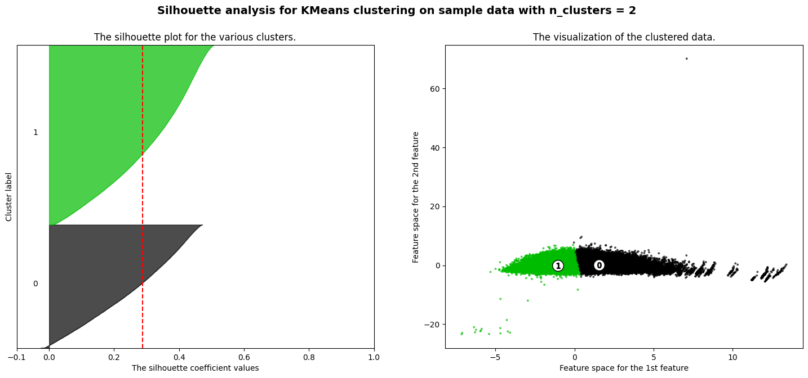
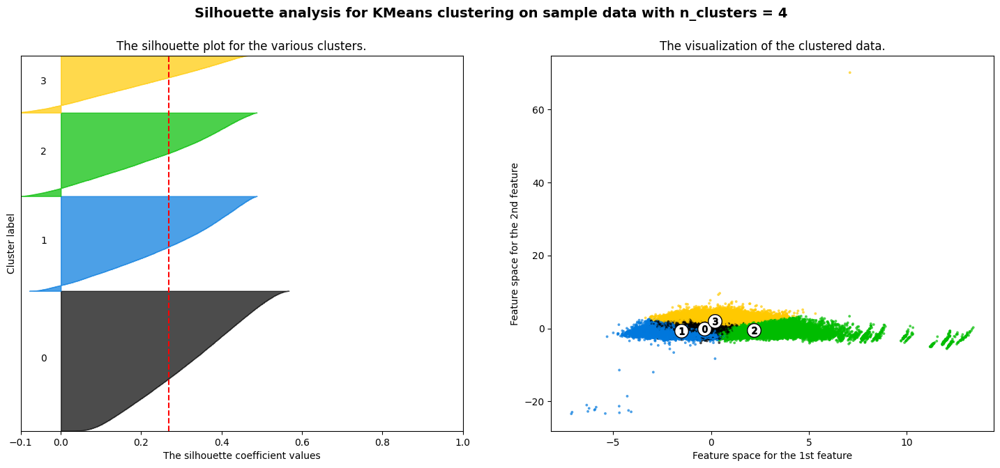
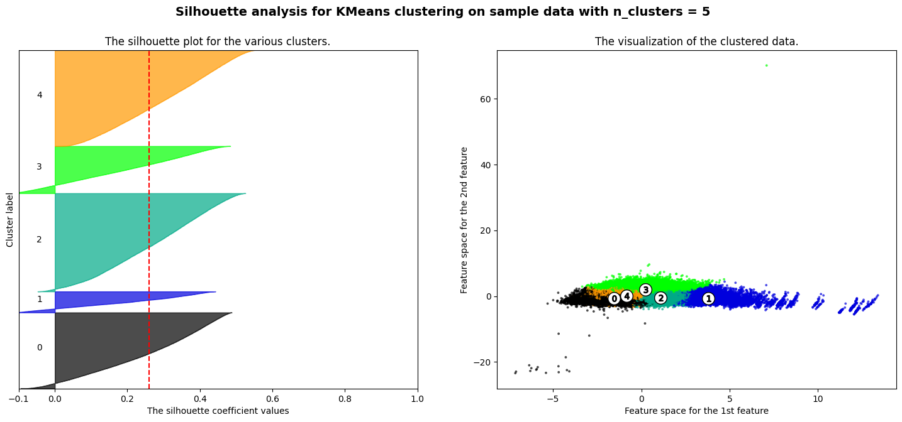
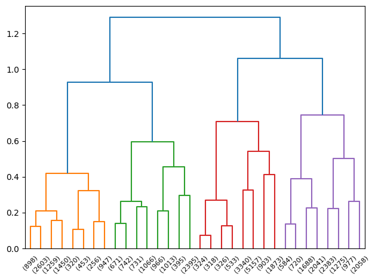
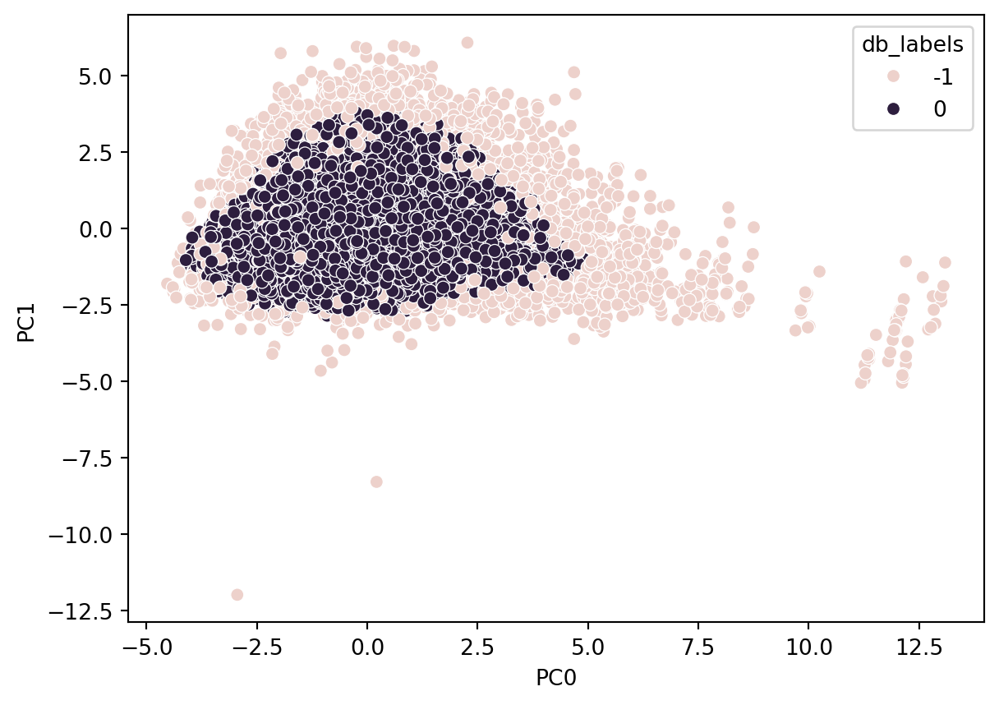
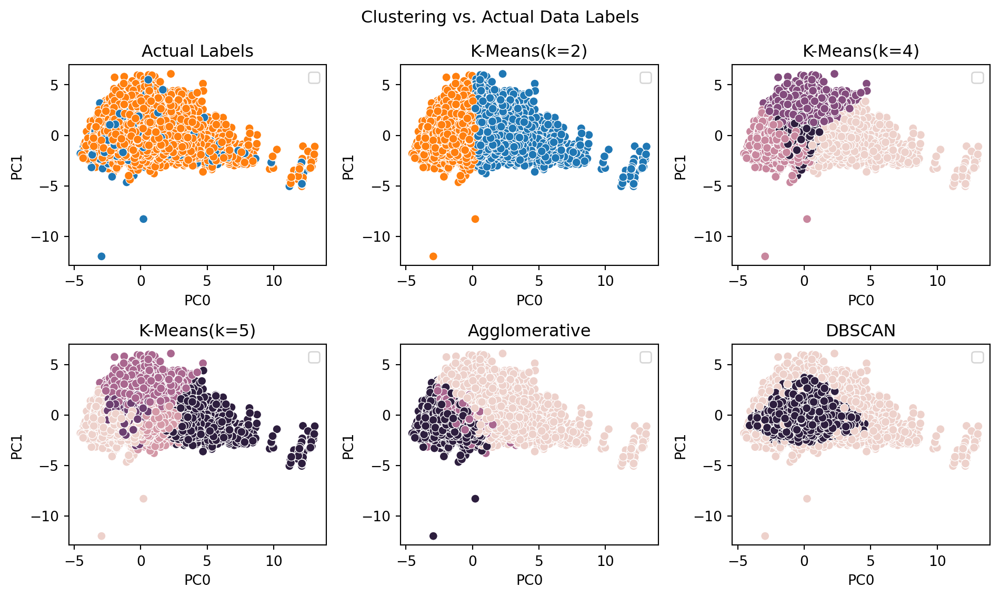

| PC0 | PC1 | PC2 |
|---|---|---|
| -0.892240 | -0.448016 | -0.182751 |
| -0.931789 | -0.758654 | -1.987403 |
| -0.790594 | -0.409078 | 1.276530 |
| -2.012753 | 0.254438 | 1.666342 |
| 0.755317 | 2.409991 | 1.879752 |
5 Data Clustering
5.1 Overview
Clustering is a combination of mathematical methods for identifying potential groupings or similarities between records within a dataset. This research explores use of K-Means, hierarchical, and density based clustering methods to examine the numeric data that was produced in Chapter 3.
5.1.1 K-Means
K-Means clustering is a partitional clustering method that identifies and divides the data into distinct groups or clusters by using the expectation maximization algorithm. Conceptually, the algorithm is simple to understand and explain:
pick the number of clusters you wish to identify, k
select k-random points within the range of the data to serve as the initial cluster centers
measure the distance from each point \(x_i\) to each of the \(k_i\) centers
assign the current point \(x_i\) as being a member of center \(k_i\) if the distances between \(x_i\) and \(k_i\) is lower than the distance from \(x_i\) to any other center \(k\)
for every center \(k\), recalculate its location by taking the average of every point \(x_i\) that has been assigned as a member of \(k\).
repeat steps 4-6 above until either the centers stop moving beyond a certain threshold or until a desired number of iterations has been reached
5.1.2 Density-Based Clustering
Density based clustering, like Density-Based Spatial Clustering of Applications with Noise or DBSCAN, can be used to find and identify clusters with more complex shapes and boundaries than that of partitional clustering methods like K-Means.
DBSCAN operates under a different paradigm. Where K-Means operates off of distance between points and a center, DBSCAN operates off of distance between every point to determine how many points are in its neighborhood. As such, DBSCAN has two primary parameters, a maximum distance and a minimum number of points. To measure density, in general, one seeks to measure how many items are within a limited amount of space.
DBSCAN measures a point’s density by how many other points are within the established maximum distance from that point. If that point meets or exceeds the established minimum number of points, then the point is considered a dense point or part of the core. Otherwise, the point is not considered dense. This action is measured and performed for every datapoint.
After the measurements are performed, a dense point is chosen at random to be assigned as a member of a cluster. Then, all of its dense neighbors are assigned to be members of the same cluster. This process continues until all dense neighbors within a cluster are assigned as members of the cluster. Then, any non-dense points that directly neighbor dense points within the cluster are also assigned to the cluster. Non-dense, non-neighboring points are not assigned at this time.
The above process is repeated for other dense points that were not assigned as part of the first cluster until all dense points (and all non-dense points that neighbor dense clusters) are assigned as members of a cluster. Any remaining non-neighboring non-dense points are then assigned as members of an outlier cluster (typically denoted by -1 in most density clustering algorithms).
Because of the concept of this snaking and neighboring point adjacencies by density, DBSCAN can identify and connect points in a complex manner that K-Means cannot.
5.1.3 Hierarchical Clustering
Hierarchical clustering is a methodology that allows one to divide or aggregate datapoints within a dataset based upon either a desired number of overarching clusters, or by a distance metric, and building a hierarchy to outline the cluster in which a datapoint belongs. Hierarchical clustering can be approached via aggregating many small clusters (agglomerative) or by dividing the data into progressively smaller clusters (divisive).
Hierarcical clustering can be of benefit for highly dimensional data.
5.1.4 Clustering In This Study
Clustering is explored in this study to ascertain any connection between the source data variables and the outcomes of each mortgage application. If clusters could be produced that map data points to their outcomes (almost in a predictive manner), this could be of benefit, even if the cluster label is only sometimes correct. The cluster label could be used as a numeric factor in modeling to support improved predictive accuracy.
Furthermore, the clustering will be used (when MCA analysis is complete) to evaluate the impact and influence of protected class variables when attempting to marry clustering results to loan outcomes. If protected classes are impactful and can effectively cluster a loan application to its outcome, this may warrant further investigation as to why.
5.2 Data
The source data available for clustering in this research contains over 200k records. Hierarchical and density-based clustering methods both take an extensive amount of memory resources. In order to perform these clustering methods on the available data, a stratified sample (on outcome) will be taken from the data and these clustering methods will be performed on the samples. The label is temporarily added to the PCA-transformed data, a stratified sample of approximately 20% of the dataset is then taken, and clustering is performed upon this sample.
The data used to perform clustering is based solely on the 3D PCA performed on numeric variables. The 3D PCA transformed dataset is located here. The steps to produce this dataset are covered in Chapter 3. Below is the head of the dataframe of principal components used for clustering. This dataframe is the 20% sample that is leveraged for density-based and hierarchical clustering.
Data, before any transformations, can be viewed in Table 3.4, and standard scaled data in Table 3.5.
Before the completion of this research, clustering will also be performed on MCA-transformed data.
5.3 Code
The code to clean and prepare the data for clustering is located here and written in Python. The code will include MCA transformations in the future. Additionally, this code leveraged an example from Scikit-Learn to best identify the number of clusters to use in K-Means for the PCA-transformed data.
5.3.1 K-Means Clustering
The silhouette method was leveraged to identify several cluster options for K-Means using the 3D PCA dataset. This uses silhouette scores to determine how well datapoints are mapped to clusters and how well separated the clusters are within the data.
Using this method the best performing cluster counts included k=2, k=4 and k=5

K=2 K-Means Clustering had a silhouette score of 0.256.

K=4 K-Means Clustering had a silhouette score of 0.362.

K=5 K-Means Clustering had a silhouette score of 0.381.
5.3.2 Hierarchical Clustering
Hierarchical clustering was performed on the 3d-transformed PCA data produced in Chapter 3. The hierarchy produced 2 main clusters, which may be beneficial for a binary classification problem such as predicting loan approval or denial. If the clusters had some ties to the actual grouping of approvals or denials, then this could be of benefit.
However, as mentioned in Chapter 3, the 3d transformation of numeric-only data resulted in an explained variance of only about 43%. As such, the two produced clusters are unlikely to have any direct ties to the actual outcomes in the source data.

The dendrogram is challenging to interpret in this case, as it’s splitting the data on a roughly PCA-transformed dataset with limited explainability in the data’s variance. Furthermore, the base labels of the dendrogram are simply based upon the datapoints indices themselves, and as such the dendrogram doesn’t add substantial information or interpretability in this context. Performing a plot of the points and their classifications will likely be a more fruitful endeavor.
Furthermore, the silhouette score for the hierarchical clustering was 0.266, which is fairly low. Generally, a score closer to zero signifies indifference or poor matching and grouping of the data into potentially meaningful clusters. That being said, the performance of hierarchical clustering in comparison to K-Means pales in comparison. Even the worst performing K-means cluster of K=2 was approximately equivalent to hierarcical clustering (0.256 vs. 0.266).
5.3.3 Density Clustering (DBSCAN)
Density-based clustering can support a researcher in identifying nested, non-uniformly sized or shaped clusters in multiple dimensions. Density can also be leveraged to cluster and group data together while isolating outliers that are in low-density regions. By examining points in the source data and measuring point density and distance, points continuously meeting the density criteria are added to the same cluster.
Points failing to meet the density criteria can only be added to a cluster, but are not considered for the continuity criteria for extending the cluster. Some of these points are added to clusters, and others are considered outliers (e.g. when they are substantially distant from any cluster points).
This methodology can produce different size clusters in different dimensions, and follow paths and patterns within the data based upon point densities.
Performing density-based clustering using DBSCAN on the source data produced a silhouette score of approximately 0.33.

5.4 Results
What is the difference in the outputs for the data, though? And how do those compare to the actual underlying labels?
To visualize, one can take the K-Means clusters and apply the same subset of the data as used for Agglomerative and DBSCAN, and also visualize the source data’s labels. This is done in the below figure.

The outcome of these clusters does not directly further the intent of this research. In part, this is likely due to the small degree of variance (42%) that is encapsulated within a 3D PCA. The silhouette score for the 3D PCA with its own labels is shockingly low at an approximate value of -0.0096, meaning that the nature of this data makes it difficult to perform unsupervised clustering and potentially arrive at meaningful labels that are connected or related to the actual labels.
Furthermore, additional challenges are reflected by the silhouette scoring for both K-Means and agglomerative below 0.3, and DBSCAN with a silhoutte score of approximately 0.41. These relatively low scores signify that none of these clustering methods, performed on the available data, has an ability to establish clusters that are substantially far or distinct from one another.
Performing clustering on MCA-transformed data, which will encapsulate categorical values in an appropriate transformation to numeric values, will likely give a far more interesting cluster analysis. Since this research seeks to explore categorical variables and their potential impacts to outcome of loan applications, this transformation will be performed, analyzed, and potentially used in the models for this research.
5.5 Conclusion
What do these technical results signify to the casual reader? The numeric data alone in HMDA records may not be sufficient to examine trends, interesting patterns, or predictions (such as clusters) within US mortgage applications. This could be due to data that is available, but not included in the attempts to cluster (such as categorical variables or the reduced dimensions), or data that is unavailable within HMDA records - outside influencers or causes that place a mortgage application into the “approve” or “deny” pile.
The K-Means clustering results at multiple levels didn’t produce strong, distinct, or separated clusters. Hierarchical clustering performed better in terms of cluster distinctness, but fails to resemble the actual outcomes for those loan applications. Density clustering also failed to produce anything resembling the source outcomes.
None of the clustering methods produced labels that resembled actual outcomes for each application. Additionally, examining the actual labels, there’s a fairly evident interspersing of the outcomes (rejection and approval) amongst one another in the source data, as is clear in Figure 5.2. With data in this form and quality, it is unlikely that a clustering method could differentiate between interesting groups within such a homogenous space.
Producing MCA transformations of categorical variables in combination with these numeric variables is the best chance this research will have to seek out more meaningful clusters in comparison to the loan outcomes of approval and denial.